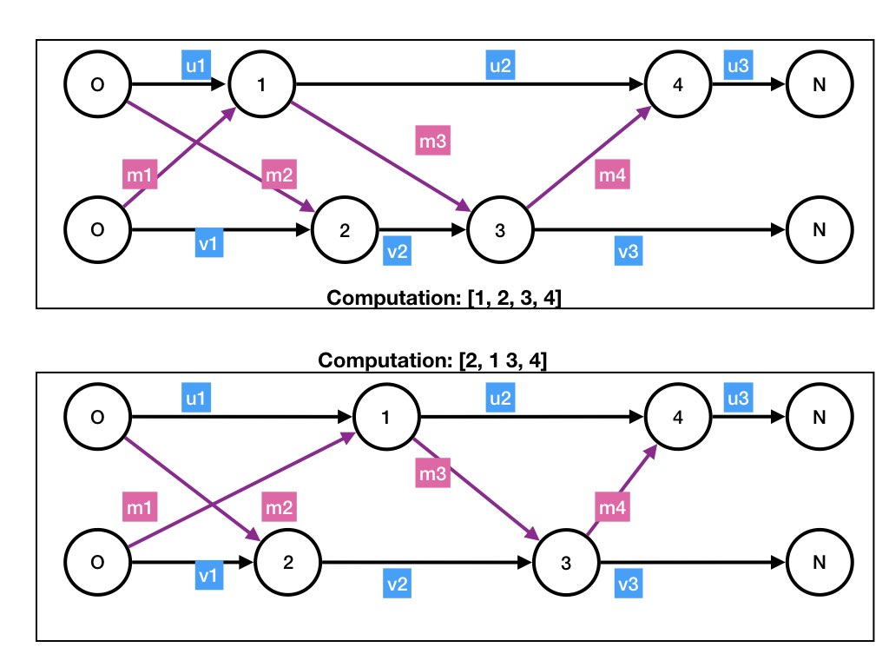

A change in the state of a system changes the state of at most one
agent and the states of its incident channels.
The local change is specified by an event.
The flow of data between events at agents is represented by a
dataflow graph.
Timelines
An idle agent waits for messages to arrive on its input channels.
An idle agent v executes receive(msg, u) by
receiving msg at the head of any nonempty input channel
(u, v).
An agent's variables change as it executes a receive()
and the agent may send messages.
The evolution of the state of a system over time is depicted by a
timeline
diagram in which the x-axis is the time axis or t-axis.
Figure 1 shows states of a system with two agents \(u\) and
\(v\).
Each horizontal line shows the state of an agent at each point in
time.
The lower horizontal line shows the states of agent v
and the upper horizontal line shows the states of agent u.
Fig.1: Example: Timeline
An execution of a receive is represented by a rectangle, and
the length of the rectangle represents the time to execute the
receive.
The state of the agent changes as the receive is executed, and is
specified at each point in the rectangle.
Each message is represented by a line which is labeled with the
message.
The line starts from the point on the sender's timeline at the time that the
message is sent.
The line ends at the point on the receiver's timeline at the time that the
receiver starts executing the receive() which receives
the message.
For example, messages m2 and m3 are sent by \(u\) while it is executing its
first receive.
Agent \(v\) starts executing receive(m2, u) some time
after v sends m2.
The state of v before it starts its k-th execution of receive is
shown in the figure as vk.
An instant at time T is represented by a vertical line T units to the
right of the origin.
The state of an agent at time T is the state where the vertical line
at T intersects the horizontal line representing the agent's state at
different points in time.
In the figure, at time T represented by the dotted red line, agents
u and v are both executing receives.
Next, we describe a model that ignores time and ignores changes in the
state of an agent while it is executing a receive.
Events
The top diagram of the figure below depicts an execution of
receive as time progresses, and the lower diagram ignores
time and restricts attention to the states of the agent before and
after execution of the receive.
Fig.2: Representation of receive with and without time
An execution of a receive by an agent
u is called an event at u.
Ignoring the evolution of state over real time (upper diagram of
figure 2), we specify an event in which an agent u executes
receive(msg, v) as the following 4-tuple (lower diagram of
figure 2):
u's state before it executes the receive,
the message, msg, received and the sender, v, of the message,
u's state after it completes execution of the receive, and
for each output channel of u, the sequence of messages
sent and the receivers of the messages.
The first two elements of the tuple are the inputs to the event, and
the last two elements are the outputs of the event.
Each event represents an execution of a receive but without specifying
the time evolution of state.
And each execution of a receive is represented by an event.
Dataflow
A dataflow graph is an abstraction of the timeline diagram.
The lower diagram of figure 3 is the dataflow abstraction of the
timeline shown in the upper diagram.
Fig.3: Example: Dataflow Graph
A dataflow graph of a system is a labeled, directed, acyclic graph
where the vertices represent events and the edges represent relations
between events.
There is an edge from an event at an agent to the next event at that
agent; this edge is labeled with the state of the agent between the
events and is called an agent edge.
There is an edge from an event in which a message is sent
to the edge at which the message is received; this edge is labeled
with the message and is called a message edge.
The inputs and outputs of each vertex in a dataflow graph are
as in the 4-tuple specification of the event that the vertex
represents.
A dataflow graph starts in any state, and may be finite or infinite.
Example
For example, vertex 1 in the graph represents an event at agent
u specified by the 4-tuple: (1) state before event is
u1, (2) message received is m1 from
v, (3) state after event is u2, (4) messages
sent in the event are m3 sent to v.
A dataflow graph has an initial vertex, labeled O, for each
agent.
The output edges from an initial vertex at an agent u
specify u's initial state and the states of
u's output channels.
The graph representing a finite computation has a vertex labeled
N for each agent, representing the final state.
This vertex is called the
final vertex of the agent. The input edges to a final vertex at an agent u
specify u's final state and the final states of
u's input channels.
The initial and final vertices do not represent events.
They are introduced to avoid dangling edges.
Timing of Receives
If there is an agent edge from an event p to an event
q in the dataflow graph then the receive corresponding to
q starts after the receive corresponding to
p terminates.
If there is a message edge from an event p to an event
q then the receive corresponding to
q starts after the receive corresponding to
p starts.
The receive corresponding to p may end before, during, or
after the receive corresponding to q.
If there is no path from an event p to an event
q then the executions of receives corresponding to p and
q may occur in any order and may overlap.
All dataflow graphs represent evolutions of the system state but without
specifying the times at which executions of receives start and stop.
Dataflow and State
Evolution
A dataflow graph is an abstraction -- a model -- of reality.
In figure 1, while agent u is executing its first receive
(event 1), agent v
starts and finishes executing two receives (events 2 and 3).
A dataflow graph cannot represent this situation; however, it is
adequate for designing many algorithms.
Computations
A computation of a system is a sequence of events in a dataflow graph
of the system where for every edge \((e, e')\) in the dataflow graph,
\(e\) appears before \(e'\) in the sequence.
So, a computation is a
topological sort of a dataflow graph.
A computation is drawn as a dataflow graph with events earlier in the
sequence appearing to the left of later events.
Figure 4 shows computations \([1, 2, 3, 4]\) and \([2, 1, 3, 4]\) that
have the same dataflow.

Fig.3: Example: Computations with the same Dataflow
There can be more than one computation with the same dataflow graph,
as in figure 4.
The order in which vertices appear in a diagram doesn't change the graph, so each
computation represents exactly one dataflow graph.
A model for generating the sequence of events in a computation is the
following loop:
while there exists a nonempty input channel in the system:
select a nonempty channel (u, v) in the system
let the head of channel (u, v) be msg
let the state of v be s
execute event specified by inputs: current state is s,
and message received is msg from u
The while loop is merely a model; we will never execute it.
All computations, and therefore all dataflows, can be generated by
suitably selecting the nonempty channel in each iteration.
v
Example
The computation \([2, 1, 3, 4]\) shown in the lower diagram of figure
4 can be generated by selecting nonempty channels in the following
sequence: (u, v), (v, u), (u,
v), (v, u).
We will use dataflows and computations repeatedly in this course.
K. Mani Chandy,
Emeritus Simon Ramo Professor,
California Institute of Technology